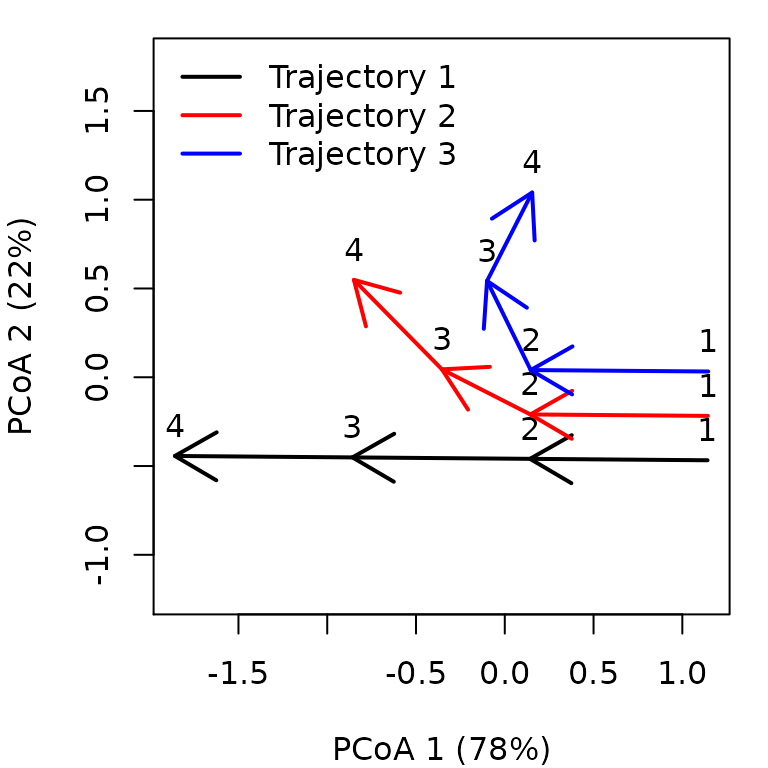
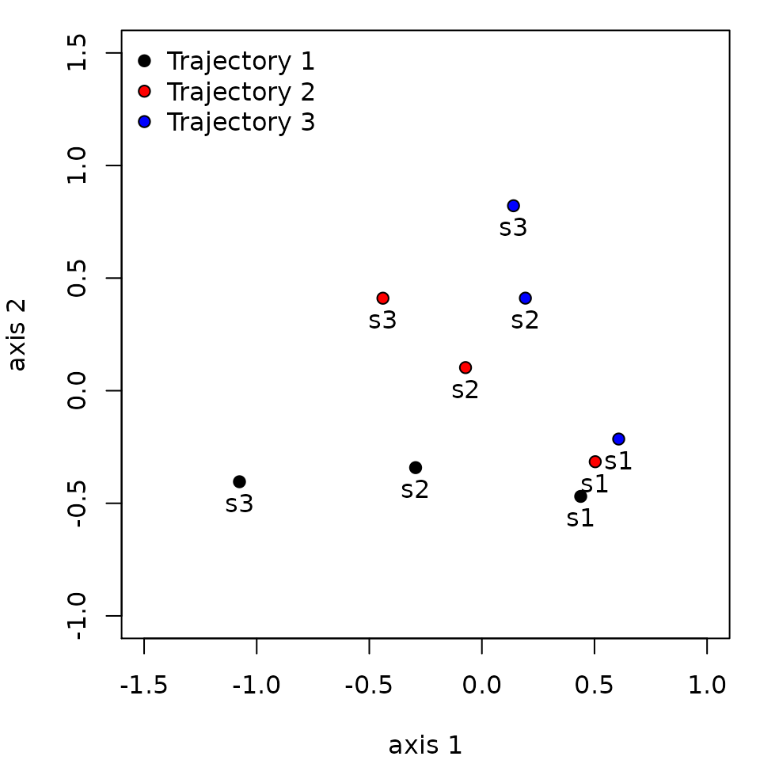
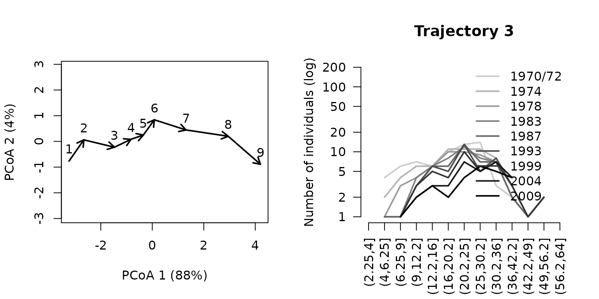
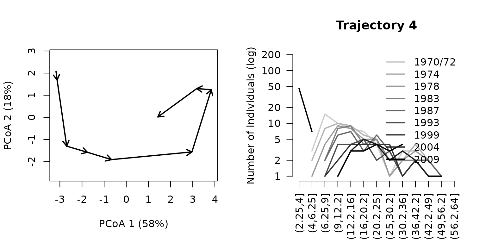
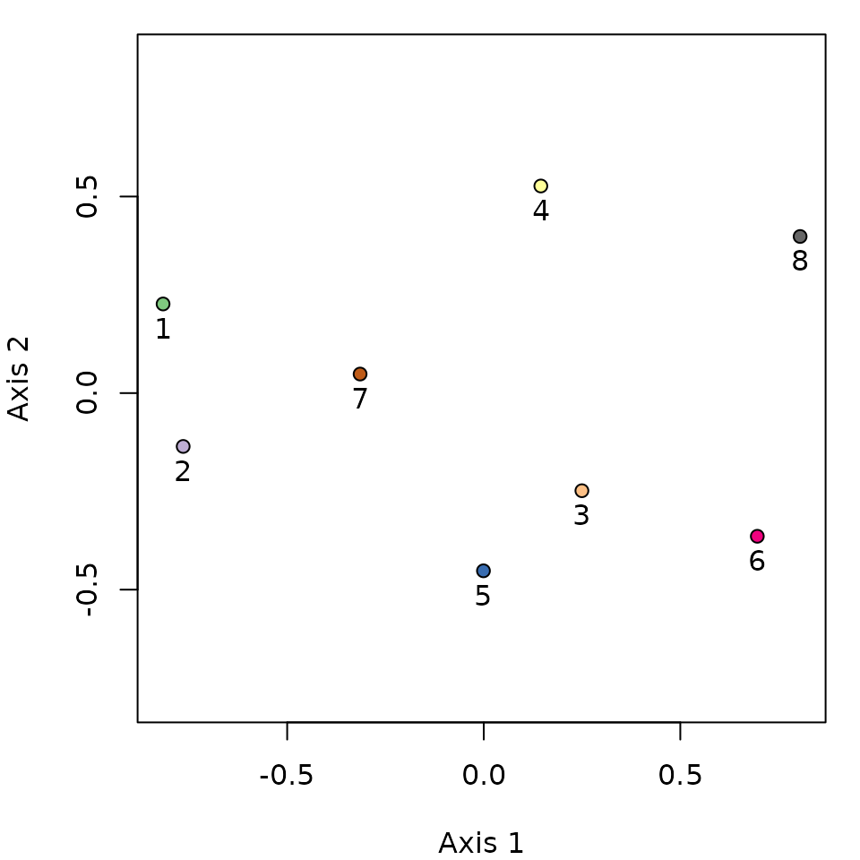

Introduction to Ecological Trajectory Analysis
Miquel De Cáceres
2021-05-30
IntroductionETA.Rmd1. Introduction
1.1 What is Ecological Trajectory Analysis
Ecological Trajectory Analysis (ETA) is a framework to analyze ecosystem dynamics described as trajectories in a chosen space of ecosystem resemblance. CTA takes trajectories as objects to be analyzed and compared geometrically. The framework was presented for community ecology in De Cáceres M, Coll L, Legendre P, et al (2019) Trajectory analysis in community ecology. Ecol Monogr 89:e01350. https://doi.org/10.1002/ecm.1350.
Given a distance matrix between ecosystem states and vectors defining sites (i.e. sampling units) and surveys (temporal replications), package ecotraj offers a set of functions to perform ETA.
1.1 About this vignette
In this vignette you will learn how to conduct ETA using different package functions.
First of all, we load ecotraj and other libraries needed in this document:
## Loading required package: Rcpp## Loading required package: plotrix## Loading required package: colorspace## Loading required package: e1071## Registered S3 methods overwritten by 'car':
## method from
## influence.merMod lme4
## cooks.distance.influence.merMod lme4
## dfbeta.influence.merMod lme4
## dfbetas.influence.merMod lme4##
## Attaching package: 'smacof'## The following object is masked from 'package:base':
##
## transform2. Simple example
In this section we describe how to study the trajectories of three sites that have been surveyed four times each. We use a small dataset where trajectories occur in a space of two dimensions, so that geometric calculations can be followed more easily.
2.1 Trajectory data
To specify community dynamics, we need three data items:
- A set of community states (i.e. coordinates in a space \(\Omega\)), described using a distance matrix \(d\);
- A vector specifying the site (i.e. sampling unit) corresponding to each community state;
- A vector specifying the survey (i.e. time point) corresponding to the sampling of each community state.
In CTA, sampling units do not need to be surveyed synchronously nor the same number of times. However, in this example we assume all three sites have been surveyed synchronously four times.
Let us first define the vectors that describe the site and the survey of each community state:
#Description of sites and surveys
sites = c(1,1,1,1,2,2,2,2,3,3,3,3)
surveys=c(1,2,3,4,1,2,3,4,1,2,3,4)We then define a matrix whose coordinates correspond to the set of community states observed. The number of rows in this matrix has to be equal to the length of vectors sites and surveys. We assume that the community space \(\Omega\) has two dimensions:
#Raw data table
xy<-matrix(0, nrow=12, ncol=2)
xy[2,2]<-1
xy[3,2]<-2
xy[4,2]<-3
xy[5:6,2] <- xy[1:2,2]
xy[7,2]<-1.5
xy[8,2]<-2.0
xy[5:6,1] <- 0.25
xy[7,1]<-0.5
xy[8,1]<-1.0
xy[9:10,1] <- xy[5:6,1]+0.25
xy[11,1] <- 1.0
xy[12,1] <-1.5
xy[9:10,2] <- xy[5:6,2]
xy[11:12,2]<-c(1.25,1.0)
cbind(sites,surveys,xy)## sites surveys
## [1,] 1 1 0.00 0.00
## [2,] 1 2 0.00 1.00
## [3,] 1 3 0.00 2.00
## [4,] 1 4 0.00 3.00
## [5,] 2 1 0.25 0.00
## [6,] 2 2 0.25 1.00
## [7,] 2 3 0.50 1.50
## [8,] 2 4 1.00 2.00
## [9,] 3 1 0.50 0.00
## [10,] 3 2 0.50 1.00
## [11,] 3 3 1.00 1.25
## [12,] 3 4 1.50 1.00The matrix of Euclidean distances \(d\) between community states in \(\Omega\) is then:
#Distance matrix
D = dist(xy)
D## 1 2 3 4 5 6 7
## 2 1.0000000
## 3 2.0000000 1.0000000
## 4 3.0000000 2.0000000 1.0000000
## 5 0.2500000 1.0307764 2.0155644 3.0103986
## 6 1.0307764 0.2500000 1.0307764 2.0155644 1.0000000
## 7 1.5811388 0.7071068 0.7071068 1.5811388 1.5206906 0.5590170
## 8 2.2360680 1.4142136 1.0000000 1.4142136 2.1360009 1.2500000 0.7071068
## 9 0.5000000 1.1180340 2.0615528 3.0413813 0.2500000 1.0307764 1.5000000
## 10 1.1180340 0.5000000 1.1180340 2.0615528 1.0307764 0.2500000 0.5000000
## 11 1.6007811 1.0307764 1.2500000 2.0155644 1.4577380 0.7905694 0.5590170
## 12 1.8027756 1.5000000 1.8027756 2.5000000 1.6007811 1.2500000 1.1180340
## 8 9 10 11
## 2
## 3
## 4
## 5
## 6
## 7
## 8
## 9 2.0615528
## 10 1.1180340 1.0000000
## 11 0.7500000 1.3462912 0.5590170
## 12 1.1180340 1.4142136 1.0000000 0.5590170CTA is based on the analysis of information in the distance matrix \(\Delta = [d]\). Therefore, it does not require explicit coordinates. This is an advantage because it allows the analysis to be conducted on arbitrary metric (or semi-metric) spaces. The choice of \(d\) is left to the user and will depend on the problem at hand.
2.2 Displaying trajectories
To begin our analysis of the three trajectories, we display them in an ordination space, using function trajectoryPCoA. Since \(\Omega\) has only two dimensions in this example, the Principal Coordinates Analysis (PCoA) on \(d\) displays the complete space:
par(mar=c(4,4,1,1))
trajectoryPCoA(D, sites, surveys, traj.colors = c("black","red", "blue"), lwd = 2,
survey.labels = T)
legend("topleft", col=c("black","red", "blue"),
legend=c("Trajectory 1", "Trajectory 2", "Trajectory 3"), bty="n", lty=1, lwd = 2)
While trajectory of site ‘1’ (black arrows) is made of three segments of the same length and direction, trajectory of site ‘2’ (red arrows) has a second and third segments that bend and are shorter than that of the segond segment of site ‘1’. Trajectory of site ‘3’ includes a stronger change in direction and shorter segments.
As this example has two dimensions and we used Euclidean distance, the same plot (albeit rotated) can be straightforwardly obtained using matrix xy and function trajectoryPlot:
par(mar=c(4,4,1,1))
trajectoryPlot(xy, sites, surveys, traj.colors = c("black","red", "blue"), lwd = 2,
survey.labels = T)
legend("topright", col=c("black","red", "blue"),
legend=c("Trajectory 1", "Trajectory 2", "Trajectory 3"), bty="n", lty=1, lwd = 2)
While trajectoryPCoA uses PCoA (also known as classical Multidimensional Scaling) to display trajectories, users can display community trajectories using other ordination techniques such as metric Multidimensional Scaling (mMDS; see function mds of package smacof) or non-metric MDS (nMDS; see function metaMDS in package vegan or function isoMDS in package MASS). Function trajectoryPlot will help drawing arrows between segments to represent trajectories on the ordination space given by any of these methods.
Functions trajectoryPCoAand trajectoryPlot allow selecting the subset of trajectories to be displayed, so that the representation can focus on particular pathways (see also function trajectorySelection).
2.3 Trajectory lengths, angles and overall directionality
One may be interested in studying the geometric properties of particular trajectories. For example, one can obtain the length of trajectory segments and the total pathway length using function trajectoryLengths:
trajectoryLengths(D, sites, surveys)## S1 S2 S3 Trajectory
## 1 1 1.000000 1.0000000 3.000000
## 2 1 0.559017 0.7071068 2.266124
## 3 1 0.559017 0.5590170 2.118034In CTA, angles are measured using triplets of time-ordered community states (a pair of consecutive segments is an example of such triplets). As matrix \(\Delta\) may represent a space of multiple dimensions, angles cannot be calculated with respect to a single plane. Instead, each angle is measured on the plane defined by each triplet. Zero angles indicate that the three points (e.g. the two consecutive segments) are in a straight line. The larger the angle value, the more is trajectory changing in direction. Mean and standard deviation statistics of angles are calculated according to circular statistics (see R package circular). Function trajectoryAngles allows calculating the angles between consecutive segments:
trajectoryAngles(D, sites, surveys)## S1-S2 S2-S3 mean sd rho
## 1 0.00000 0.00000 0.00000 0.00000000 1.0000000
## 2 26.56505 18.43495 22.50000 0.07097832 0.9974842
## 3 63.43495 53.13010 58.28253 0.08998746 0.9959593While site ‘1’ follows a straight pathway, angles are > 0 for trajectories of site ‘2’ and ‘3’, denoting the change in direction. In this case, the same information could be obtained by inspecting the previous plots, but in a case where \(\Omega\) has many dimensions, the representation will correspond to a reduced (ordination) space and hence, angles and lengths in the plot will not correspond exactly to those of functions trajectoryLengths and trajectoryAngles, which take into account the complete \(\Omega\) space.
Angles can be calculated not only for all consecutive segments but for all four triplets of ordered community states, whether of consecutive segments or not (i.e., between points 1-2-3, 1-2-4, 1-3-4 and 2-3-4). This is done by specifying all=TRUE in trajectoryAngles:
trajectoryAngles(D, sites, surveys, all=TRUE)## A1 A2 A3 A4 mean sd rho
## 1 0.00000 0.0000 0.00000 0.00000 0.00000 0.0000000 1.0000000
## 2 26.56505 36.8699 35.53768 18.43495 29.36033 0.1300790 0.9915754
## 3 63.43495 90.0000 94.76364 53.13010 75.36015 0.3078934 0.9537066The mean resultant length of circular statistics (column rho of the previous result), which takes values between 0 and 1, can be used to assess the degree of homogeneity of angle values and it will take a value of 1 if all angles are the same. This approach, however, uses only angular information and does not take into account the length of segments.
To measure the overall directionality of a community trajectory (i.e. if the pathway consistently follows the same direction in \(\Omega\) ), we recommend using another statistic that is sensitive to both angles and segment lengths and is implemented in function trajectoryDirectionality:
trajectoryDirectionality(D, sites, surveys)## 1 2 3
## 1.0000000 0.8274026 0.5620859As known from previous plots, trajectory of site ‘2’ is less straight than trajectory of site ‘1’ and that of site ‘3’ has the lowest directionality value. Note that function only computes a descriptive statistic, i.e. it does not perform any statistical test on directionality.
2.4 Relative positions within trajectories
Community states occupy a position within their trajectory that depends on the total pathway length of the trajectory (see Fig. 2 of De Cáceres et al. 2019). By adding the length of segments prior to a given state and dividing the sum by the total length of the trajectory we obtain the relative position of the community state. Function trajectoryProjection allows obtaining the relative position of each point of a trajectory. To use it for this purpose one should use as parameters the distance matrix between states and the indices that conform the trajectory, which have to be entered twice. For example for the two example trajectories we would have:
trajectoryProjection(D, 1:4, 1:4)## distanceToTrajectory segment relativePosition
## 1 0 1 0.0000000
## 2 0 1 0.3333333
## 3 0 2 0.6666667
## 4 0 3 1.0000000If we inspect the relative positions of the points in the trajectory of site ‘2’, we find than the second and third segments have relative positions larger than 1/3 and 2/3, respectively, because the second and third segments are shorter:
trajectoryProjection(D, 5:8, 5:8)## distanceToTrajectory segment relativePosition
## 5 0 1 0.0000000
## 6 0 1 0.4412822
## 7 0 2 0.6879664
## 8 NA NA NAFunction trajectoryProjection can also be used to project arbitrary community states onto a given reference trajectory. For example we can study the projection of third state of the trajectory of site ‘2’ (i.e. state 7) onto the trajectory of site ‘1’ (i.e. states 1 to 4), which happens to be in the half of the trajectory:
trajectoryProjection(D, 7, 1:4)## distanceToTrajectory segment relativePosition
## 7 0.5 2 0.5If we project the points of the trajectory of site ‘3’ onto the trajectory of site ‘1’ we see how the curved pathway of site ‘3’ projects its fourth point to the same relative position as its second point.
trajectoryProjection(D, 9:12, 1:4)## distanceToTrajectory segment relativePosition
## 9 0.5 1 -3.700743e-17
## 10 0.5 2 3.333333e-01
## 11 1.0 2 4.166667e-01
## 12 1.5 1 3.333333e-012.5 Trajectory convergence
When trajectories have been sampled the same number of times, one can study their symmetric convergence or divergence (see Fig. 3a of De Cáceres et al. 2019). Function trajectoryConvergence allows performing tests of convergence based on the trend analysis of the sequences of distances between points of the two trajectories (i.e. first-first, second-second, …):
trajectoryConvergence(D, sites, surveys, symmetric = TRUE)## $tau
## 1 2 3
## 1 NA 0.9128709 0.9128709
## 2 0.9128709 NA 0.9128709
## 3 0.9128709 0.9128709 NA
##
## $p.value
## 1 2 3
## 1 NA 0.1485617 0.1485617
## 2 0.1485617 NA 0.1485617
## 3 0.1485617 0.1485617 NAThe function performs the Mann-Whitney trend test. Values of the statistic (‘tau’) larger than 0 correspond to trajectories that are diverging, whereas values lower than 0 correspond to trajectories that are converging. By setting symmetric = FALSE the convergence test becomes asymmetric (see Figs. 3b and 3c of De Cáceres et al. 2019). In this case the sequence of distances between every point of one trajectory and the other:
trajectoryConvergence(D, sites, surveys, symmetric = FALSE)## WARNING: Error exit, tauk2. IFAULT = 12## $tau
## 1 2 3
## 1 NA 0.9128709 0.9128709
## 2 0.9128709 NA 0.8164966
## 3 0.9128709 0.6666666 NA
##
## $p.value
## 1 2 3
## 1 NA 0.1485617 0.1485617
## 2 0.1485617 NA 1.0000000
## 3 0.1485617 0.3081795 NAThe asymmetric test is useful to determine if one trajectory is becoming closer to the other or if it is departing from the other.
2.6 Distances between segments and trajectories
To start comparing trajectories between sites (i.e. between sampling units), one important step is the calculation of distances between directed segments (see Fig. 4 of De Cáceres et al. 2019), which can be obtained by calling function segmentDistances:
Ds = segmentDistances(D, sites, surveys)$Dseg
Ds## 1[1-2] 1[2-3] 1[3-4] 2[1-2] 2[2-3] 2[3-4] 3[1-2]
## 1[2-3] 1.0000000
## 1[3-4] 2.0000000 1.0000000
## 2[1-2] 0.2500000 1.0307764 2.0155644
## 2[2-3] 1.0307764 0.7071068 1.5811388 1.0000000
## 2[3-4] 1.5811388 1.0000000 1.4142136 1.5206906 0.7071068
## 3[1-2] 0.5000000 1.1180340 2.0615528 0.2500000 1.0307764 1.5000000
## 3[2-3] 1.1180340 1.1180340 2.0124612 1.0307764 0.5590170 0.7500000 1.0000000
## 3[3-4] 1.6007811 1.5590170 2.0155644 1.4577380 1.1180340 1.0606602 1.5590170
## 3[2-3]
## 1[2-3]
## 1[3-4]
## 2[1-2]
## 2[2-3]
## 2[3-4]
## 3[1-2]
## 3[2-3]
## 3[3-4] 0.5590170Distances between segments are affected by differences in both position, size and direction. Hence, among the six segments of this example, the distance is maximum between the last segment of trajectory ‘1’ (named 1[3-4]) and the first segment of trajectory ‘3’ (named 3[1-2]).
One can display distances between segments in two dimensions using mMDS.
mMDS = mds(Ds)
mMDS##
## Call:
## mds(delta = Ds)
##
## Model: Symmetric SMACOF
## Number of objects: 9
## Stress-1 value: 0.062
## Number of iterations: 15
xret = mMDS$conf
par(mar=c(4,4,1,1))
plot(xret, xlab="axis 1", ylab = "axis 2", asp=1, pch=21,
bg=c(rep("black",3), rep("red",3), rep("blue",3)),
xlim=c(-1.5,1), ylim=c(-1,1.5))
text(xret, labels=rep(paste0("s",1:3),3), pos=1)
legend("topleft", pt.bg=c("black","red","blue"), pch=21, bty="n", legend=c("Trajectory 1", "Trajectory 2", "Trajectory 3"))
Distances between segments are internally calculated when comparing whole trajectories using function trajectoryDistances. Here we show the dissimilarity between the two trajectories as assessed using either the Hausdorff distance (equal to the maximum distance between directed segments; see eq. 8 in De Cáceres et al. 2019) or the directed segment path distance (an average of distances between segments; see eq. 13 in De Cáceres et al. 2019):
trajectoryDistances(D, sites, surveys, distance.type = "Hausdorff")## 1 2
## 2 2.015564
## 3 2.061553 1.500000
trajectoryDistances(D, sites, surveys, distance.type = "DSPD")## 1 2
## 2 0.7214045
## 3 1.1345910 0.5714490DSPD is a symmetrized distance. To calculate non-symmetric distances one uses (see eq. 11 in De Cáceres et al. 2019):
trajectoryDistances(D, sites, surveys, distance.type = "DSPD", symmetrization = NULL)## 1 2 3
## 1 0.0000000 0.7904401 1.2101651
## 2 0.6523689 0.0000000 0.5196723
## 3 1.0590170 0.6232257 0.00000003. Structural dynamics in permanent plots
In this example we analyze the dynamics of 8 permanent forest plots located on slopes of a valley in the New Zealand Alps. The study area is mountainous and centered on the Craigieburn Range (Southern Alps), South Island, New Zealand (see map in Fig. 8 of De Cáceres et al. 2019). Forests plots are almost monospecific, being the mountain beech (Fuscospora cliffortioides) the main dominant tree species. Previously forests consisted of largely mature stands, but some of them were affected by different disturbances during the sampling period (1972-2009) which includes 9 surveys. We begin our example by loading the data set, which includes 72 plot observations:
data("avoca")Community data is in form of an object stratifiedvegdata. To account for differences in tree diameter, while emphasizing regeneration, the data contains individual counts to represent tree abundance and trees are classified in 19 quadratic diameter bins (in cm): {(2.25, 4], (4, 6.25], (6.25, 9], … (110.25, 121]}. The data set also includes vectors avoca_surveys and avoca_sites that indicate the survey and forest plot corresponding to each forest state.
Before starting community trajectory analysis, we have to use function vegdiststruct from package vegclust to calculate distances between forest plot states in terms of structure and composition (see De Cáceres M, Legendre P, He F (2013) Dissimilarity measurements and the size structure of ecological communities. Methods Ecol Evol 4:1167–1177. https://doi.org/10.1111/2041-210X.12116):
##
## Attaching package: 'vegclust'## The following objects are masked from 'package:ecotraj':
##
## .angleConsecutiveC, .distanceToSegmentC, .ismetricC, .k2triangleC,
## .projectionC, .triangleinequalityC, .twoSegmentDistanceC
avoca_D_man = vegdiststruct(avoca_strat, method="manhattan", transform = function(x){log(x+1)})Distances in avoca_D_man are calculated using the Manhattan metric.
3.1 Display trajectories in PCoA
The distance matrix avoca_D_man conforms our definition of \(\Omega\). We use trajectoryPCoA to display the relations between forest plot states in this space and to draw the trajectory of each plot:
par(mar=c(4,4,1,1))
trajectoryPCoA(avoca_D_man, avoca_sites, avoca_surveys,
traj.colors = brewer.pal(8,"Accent"),
axes=c(1,2), length=0.1, lwd=2)
legend("topright", bty="n", legend = 1:8, col = brewer.pal(8,"Accent"), lwd=2)
Note that in this case, the full \(\Omega\) includes more than two dimensions, and PCoA is representing 43% of total variance (correction for negative eigenvalues is included in the call to cmdscale from trajectoryPCoA), so one has to be careful when interpreting trajectories visually.
Another option is to use mMDS to represent trajectories, which in this case produces a similar result:
mMDS = mds(avoca_D_man)
mMDS##
## Call:
## mds(delta = avoca_D_man)
##
## Model: Symmetric SMACOF
## Number of objects: 72
## Stress-1 value: 0.114
## Number of iterations: 49
par(mar=c(4,4,1,1))
trajectoryPlot(mMDS$conf, avoca_sites, avoca_surveys,
traj.colors = brewer.pal(8,"Accent"),
axes=c(1,2), length=0.1, lwd=2)
legend("topright", bty="n", legend = 1:8, col = brewer.pal(8,"Accent"), lwd=2)
One can inspect specific trajectories using argument selection in function trajectoryPCoA. This allows getting a better view of particular trajectories, here that of forest plot ‘3’:
par(mfrow=c(1,2))
trajectoryPCoA(avoca_D_man, avoca_sites, avoca_surveys,
selection= 3,
length=0.1, lwd=2, survey.labels = T)
plotTrajDiamDist(3)
In the right hand, we added a representation of the change in the mountain beech tree diameter distribution through time for trajectory of forest plot ‘3’. The dynamics of this plot include mostly growth, which results in individuals moving from one diameter class to the other. The whole trajectory looks mostly directional. Let’s now inspect the trajectory of forest plot ‘4’:
par(mfrow=c(1,2))
trajectoryPCoA(avoca_D_man, avoca_sites, avoca_surveys,
selection= 4,
length=0.1, lwd=2, survey.labels = T)
plotTrajDiamDist(4)
This second trajectory is less straight and seems to include a turn by the end of the sampling period, corresponding to the recruitment of new saplings.
3.2 Trajectory lengths, angles and overall directionality
While trajectory lengths and angles can be inspected visually in ordination diagrams, it is better to calculate them using the full \(\Omega\) space (i.e., from matrix avoca_D_man). Using function trajectoryLengths we can see that the trajectory of forest plot ‘4’ is lengthier than that of plot ‘3’, mostly because includes a lengthier last segment (i.e. the recruitment of new individuals):
trajectoryLengths(avoca_D_man, avoca_sites, avoca_surveys)## S1 S2 S3 S4 S5 S6 S7
## 1 1.2173214 1.5911988 1.0976965 2.1173501 0.5238760 1.5863283 1.5750365
## 2 0.5971165 1.7469687 0.9866591 0.9413060 1.3687614 0.6280231 1.4565581
## 3 1.1480971 1.2404953 0.6508116 0.4371405 0.5098385 1.2078811 1.6241741
## 4 0.7932307 1.8572629 0.7268623 0.8348635 3.0560437 1.9863939 0.9905892
## 5 1.7769875 0.3367341 0.7283030 0.6515714 1.2660552 0.9544933 1.2605333
## 6 2.1891568 0.5312711 1.0035212 0.4113220 2.1394743 1.0482871 1.4924056
## 7 0.2919002 0.8857645 1.0908604 0.5601649 2.0600208 0.3712067 1.1014563
## 8 0.1909713 1.2000266 2.3211891 0.6539882 2.7807668 0.8170202 1.2072425
## S8 Trajectory
## 1 0.6277940 10.336602
## 2 1.1232798 8.848673
## 3 1.4536390 8.272077
## 4 3.8794520 14.124698
## 5 0.5842314 7.558909
## 6 1.9623777 10.777816
## 7 1.7518489 8.113223
## 8 1.5107357 10.681940If we calculate the angles between consecutive segments (using function trajectoryLengths) we see that indeed the trajectory of ‘3’ is rather directional, but the angles of trajectory of ‘4’ are larger, on aveerage:
avoca_ang <- trajectoryAngles(avoca_D_man, avoca_sites, avoca_surveys)
avoca_ang## S1-S2 S2-S3 S3-S4 S4-S5 S5-S6 S6-S7
## 1 41.74809 8.669806e+01 7.401875e+01 26.94138 113.40657 100.67068
## 2 68.14891 3.466506e+01 8.537736e-07 0.00000 25.97111 0.00000
## 3 87.24519 3.088828e+01 1.207418e-06 0.00000 50.90743 48.12854
## 4 37.65736 8.537736e-07 8.537736e-07 36.25240 55.53607 74.21065
## 5 42.02156 7.166400e+01 1.207418e-06 49.95436 65.75897 65.82083
## 6 41.69894 4.611675e+01 5.669641e+01 135.84929 0.00000 0.00000
## 7 53.63254 1.152378e+02 6.519921e+01 60.71442 0.00000 56.25733
## 8 180.00000 0.000000e+00 9.213121e+01 132.36445 71.33948 36.43189
## S7-S8 mean sd rho
## 1 1.021996e+02 78.82477 0.5334615 0.8673692
## 2 1.207418e-06 17.61550 0.4257423 0.9133572
## 3 4.568199e+01 37.39925 0.5018798 0.8816663
## 4 4.980332e+01 36.44717 0.4531030 0.9024417
## 5 1.061250e+02 57.89321 0.5239476 0.8717431
## 6 0.000000e+00 34.34150 0.7777287 0.7390195
## 7 1.207418e-06 49.96352 0.6562139 0.8062928
## 8 1.207418e-06 66.68343 1.1601974 0.5101610By calling function trajectoryDirectionality we can confirm that the trajectory for site ‘4’ is less straight than that of site ‘3’:
avoca_dir <- trajectoryDirectionality(avoca_D_man, avoca_sites, avoca_surveys)
avoca_dir## 1 2 3 4 5 6 7 8
## 0.6781369 0.6736490 0.8651467 0.5122482 0.6677116 0.7058465 0.7391775 0.5254225The following code displays the relationship between the statistic in trajectoryDirectionality and the mean resultant vector length that uses angular information only and assesses the constancy of angle values:
avoca_rho = trajectoryAngles(avoca_D_man, avoca_sites, avoca_surveys, all=TRUE)$rho
par(mar=c(4,4,1,1))
plot(avoca_rho, avoca_dir, xlab = "rho(T)", ylab = "dir(T)", type="n")
text(avoca_rho, avoca_dir, as.character(1:8))3.3 Distances between trajectories
We can calculate the resemblance between forest plot trajectories using trajectoryDistances:
## 1 2 3 4 5 6 7
## 2 2.405
## 3 6.805 5.773
## 4 6.123 6.646 5.225
## 5 6.020 5.541 3.235 4.966
## 6 9.490 8.866 3.436 6.043 4.505
## 7 4.024 3.291 4.365 4.993 4.389 6.205
## 8 9.797 9.747 5.591 4.611 6.383 5.043 6.949The closest trajectories are those of plots ‘1’ and ‘2’. They looked rather close in position in the PCoA ordination of \(\Omega\) with all trajectories, so probably it is position, rather than shape which has influenced this low value. The next pair of similar trajectories are those of the ‘3’-‘5’ pair. We can again use mMDS to produce an ordination of resemblances between trajectories:
mMDS<-mds(avoca_D_traj_man)
mMDS##
## Call:
## mds(delta = avoca_D_traj_man)
##
## Model: Symmetric SMACOF
## Number of objects: 8
## Stress-1 value: 0.091
## Number of iterations: 25
x<-mMDS$conf[,1]
y<-mMDS$conf[,2]
par(mar=c(4,4,1,1))
plot(x,y, type="p", asp=1, xlab=paste0("Axis 1"),
ylab=paste0("Axis 2"), col="black",
bg= brewer.pal(8,"Accent"), pch=21)
text(x,y, labels=1:8, pos=1)
Distances between trajectories can be calculated after centering them (i.e. after bringing all trajectories to the center of the \(\Omega\) space). This is done using function centerTrajectories, which returns a new dissimilarity matrix. Centering removes differences in position between trajectories, which is useful in cases where one wants to focus on spatio-temporal interaction while discarding spatial patterns that are constant in time. We do no illustrate centering here, because in is not interesting for this particular example.